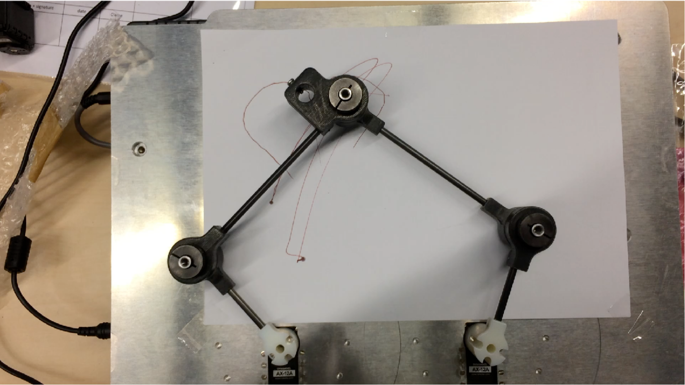

Système 5 barres de dessin robotisé avec Raspberry Pi et ROS 2


Le pantographe (système 5 barres) utilisé pour le projet.
Ce projet porte sur un pantographe, aussi appelé système 5 barres : un mécanisme plan à deux bras motorisés qui déplace un crayon pour dessiner sur une feuille. Notre objectif est de le faire fonctionner avec ROS 2 sur un Raspberry Pi 5, de le simuler, et de documenter l’ensemble de la démarche.
Note
Le point de départ de cette documentation (structure des pages, modèle 3D, schéma cinématique) est le canevas fourni par M. Manuel YGUEL dans le cours Informatique industrielle avec ROS2.
Démarche du projet
Nous avons découpé le travail en onze étapes :
décrire la plateforme mécanique ;
décrire le matériel électronique (Raspberry Pi, carte et moteurs Dynamixel), avec les liens vers les documentations techniques ;
créer la représentation du système 5 barres dans un fichier URDF ;
visualiser ce modèle dans RViz ;
établir le modèle du mécanisme et les équations qui permettent de piloter la position du crayon ;
créer un package ROS 2 pour commander le système 5 barres ;
écrire et documenter des tests ;
écrire un programme qui fait dessiner le système 5 barres ;
tester sur le système réel ;
écrire un code de simulation ;
tester en simulation avec Gazebo et RViz.
Chacune de ces étapes est détaillée dans les pages suivantes.
- Description du matériel de la plateforme système 5 barres
- Description mécanique de la plateforme système 5 barres
- Génération de la description URDF du système 5 barres
- Modèles géométriques direct et inverse du système 5 barres
- Package ROS 2 : nœuds cinématiques du pantographe
- Tests du modèle géométrique